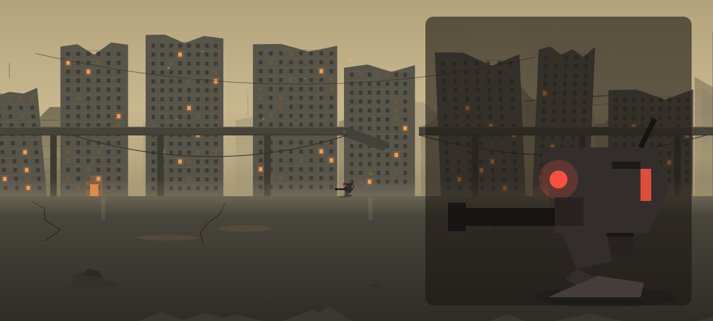
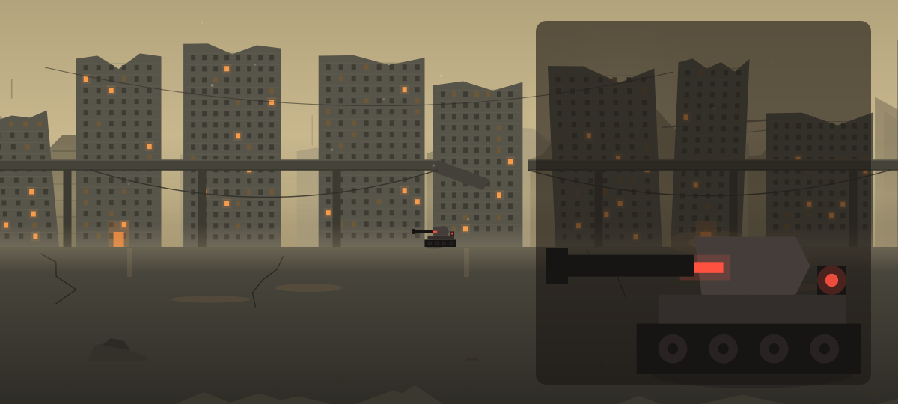
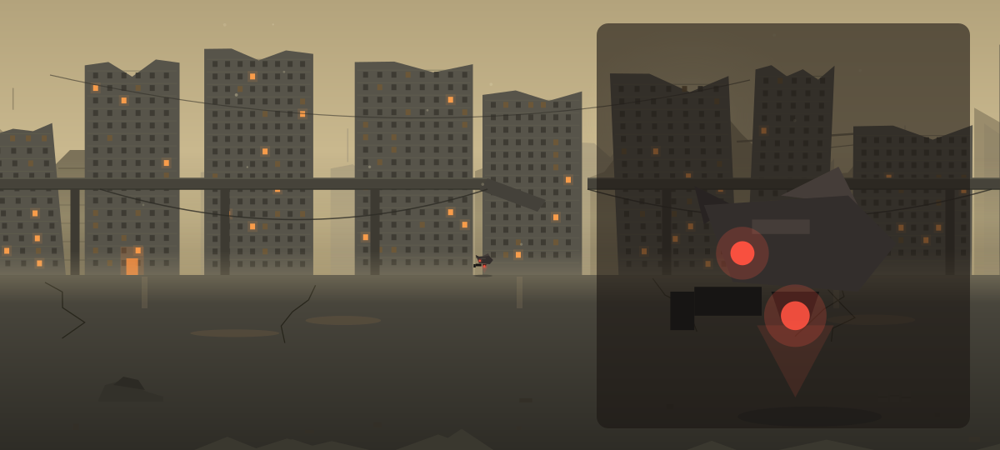

画风与玩家线同一套（几何拼装、短粗骨架、近亮远暗）。敌我识别：玩家朝右+钠灯橙 / 敌人朝左+信号红（承接占位红三角）。画内为游戏比例（敌人 44×48 世界像素，站位在玩家右侧的来向）。

和玩家 A 同构的逆关节腿但更矮壮——后续敌人要走路，腿型直接可用；单红眼 + 枪臂前下。

最低最宽：履带 + 旋转炮塔 + 前伸主炮；站桩射击的形态解释最自然，眼条换成了横条。

离开地面的维度：下置推进器红焰解释悬空；体积小、眼位高，弹道从高处来。